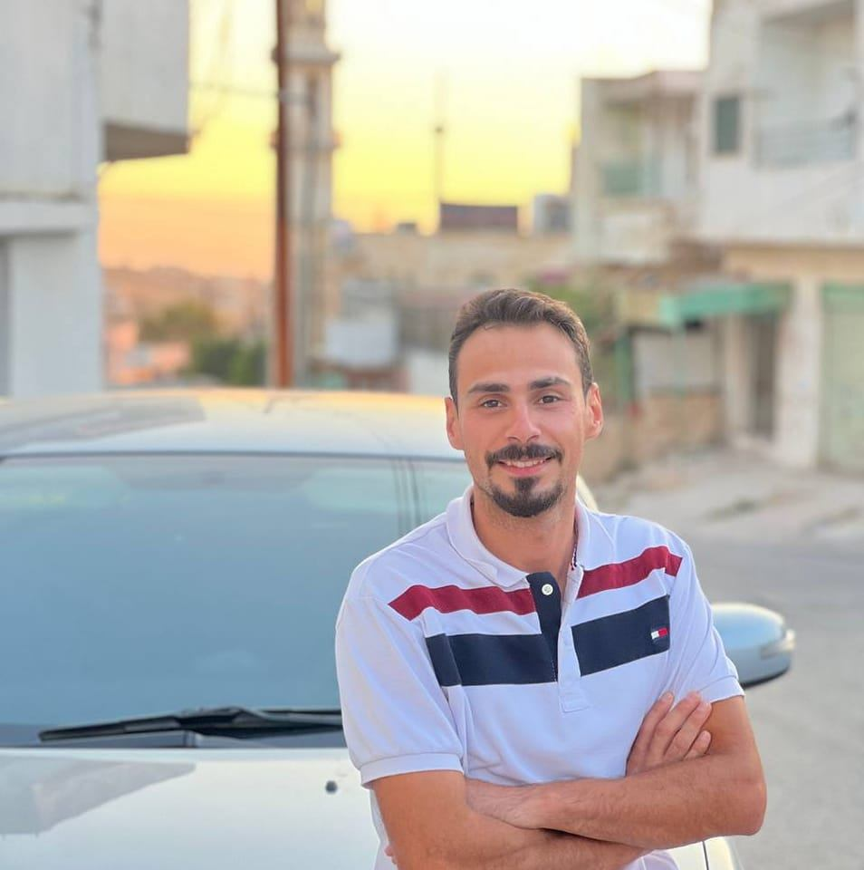

Raad Ali Fadel Al-Hanandeh
TELECOMMUNICATIN
ENGINEERING
EDUCATION
AL BALQA APPLIED UNIVERSITY | 2015-2020 BACHELOR IN TELECOMMUNICATION ENGINEERING
Engineering that relates to all digital and analog communication topics .they include electrical and electromagnetic signal . modes of transmission and treatment
CONTACT
- 9962789142150
- raadalhanandeh@gmail.com
- jordan-amman
ASSETS
- Communication
- Organization
- Team work
- Creativity
- Work under pressure
- Self motivated and fast learner
LANGUAGES
- ARABIC [Native]
- ENGLISH [Good]
EXPERIENCE
UMNIAH
RF TECHNICAL SUPPORT SEP. 2020– CURRENT
RF Technical support at Subcontractor (Smart Company).
- I ncrease FTTH & TDD customer’s satisfaction and quality of experience through fast and professional troubleshooting.
- Check the signal for End to End.
- Solve the signal Problems and Customer complaints.
- Adjust the SINR value to improve the value of (RSRP / RSRQ), Signal booster installation ( Outdoor Unit )
- Solve routers and SIM problems.
- Direct the routers to the signal source and Report’spreparation
my programming experience points
- develope web pages using HTML and organize content
- Design and format pages using CSS and adjust resposive on defferent devices.
- Develope web applications using PHP and mySQL databases.